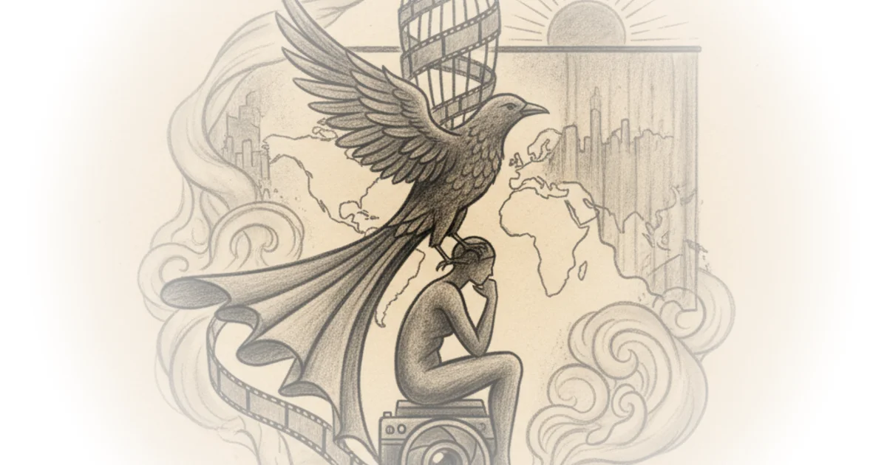

Matthew Clayfield does not merely review a film festival; he curates a forensic study of artistic survival under the weight of state oppression. The piece's most striking claim is that the true measure of Jafar Panahi's legacy lies not in his early, sanctioned masterpieces, but in the radical, clandestine works produced after the executive branch banned him from filmmaking for twenty years. In an era where global attention is often fixated on geopolitical headlines, Clayfield forces the listener to confront the human cost of censorship through the lens of a director who turned his own imprisonment into a cinema of resistance.
The Two Phases of a Censored Life
Clayfield structures the narrative around a sharp bifurcation in Panahi's career, arguing that the ban did not silence the filmmaker but rather forced a metamorphosis. He writes, "His filmography can be broken into two distinct phases... There are the films he made when he was allowed to make films and there are the films he made after he was not." This framing is crucial because it shifts the focus from what was lost to what was invented in the void. The author notes that while the early works like Mirror and The White Balloon used children to explore Iranian society "on the sly," the later works shed this disguise for a rawer, more direct confrontation with power.

The commentary highlights how the tone shifted from "innocent-seeming" to "angrier," a transition that mirrors the tightening grip of the regime. Clayfield observes that by the time of The Circle, Panahi was "no longer pulling punches," depicting women trapped in a cycle of incarceration that the state itself enforced. This evolution is not just stylistic; it is a political necessity. As Clayfield puts it, "To see, over two weeks, the entirety of his oeuvre—and to witness just how much it changes after he was thrown in prison and banned from filmmaking—was a wonderful experience." The "wonder" here is ironic; it is the wonder of witnessing a man refuse to disappear.
"The going got weird and the weird turned pro."
This paraphrase of Hunter S. Thompson captures the essence of Panahi's post-ban era, where the constraints of the state became the very tools of his artistry. Clayfield argues that the ban forced Panahi to adopt the "meta, extra-cinematic qualities" of his mentor, Abbas Kiarostami, who had previously pioneered the use of consumer-level digital technology to bypass official sanction. The connection to Kiarostami is vital context; just as Kiarostami's Taste of Cherry won the Palme d'Or in 1997 despite facing restrictions, Panahi learned that "a filmmaker could make a film confined entirely to a car, on video, with next to no money, and still have it be really good."
The Aesthetics of Clandestine Filmmaking
The piece delves deep into the specific mechanics of Panahi's secret films, treating them as both art and evidence of resistance. Clayfield describes This is Not a Film as a "first attempt" at this new mode, where Panahi reads a script he was forbidden to shoot, creating a "conceit" that is "never anything less than amusing" yet deeply tragic. The author notes the film's ambiguity, shot over two weeks but claiming to cover a single day, forcing the audience to "guess which parts are real and which aren't." This blurring of lines is not a gimmick; it is a survival strategy.
In discussing Taxi, Clayfield praises its "greater sense of humour" but emphasizes its "real spite for the government." The film's climax, where intelligence officers intervene to stop the filming, is described as "obviously staged," yet the author insists, "It doesn't matter, though. The tip of the point he's making is sharp." This is a powerful editorial choice: Clayfield refuses to let the audience dismiss the film as mere fiction, insisting that the staged nature of the arrest underscores the very real threat facing the director.
However, the commentary also acknowledges the darker turn in Panahi's later work. Closed Curtain is analyzed as a "profound exploration of depression in the face of oppression," challenging the romantic notion that suffering automatically fuels great art. Clayfield writes, "Closed Curtain is about depression getting in the way of art, not about depression facilitating it." This distinction is critical, as it rejects the "myth" that artistic genius requires misery, offering instead a sober look at the psychological toll of living under a regime that criminalizes one's existence.
Critics might argue that focusing so heavily on the "meta" aspects of these films risks overshadowing the narrative power of the stories themselves. Yet, Clayfield's analysis suggests that in Panahi's case, the form is the message. The inability to leave the house or cross the border becomes the central plot point, as seen in No Bears, where the director films from the Iranian side of the Turkish border. The film's ending, described as a "dovetailing of the film's constituent halves" that is "very sad and moving," reinforces the idea that the physical and legal barriers imposed by the state are inescapable, even within the fictional world.
"I can't name a regime in the region, outside of the House of Saud... that I dislike more than the Islamic Republic."
Clayfield's personal voice emerges strongly here, grounding the artistic analysis in a moral judgment of the political reality. The piece concludes by noting that the backdrop of war in the Middle East adds a "significant impact" to the viewing experience, reminding the audience that these are not abstract artistic exercises but documents of life under a regime that the author explicitly condemns.
Bottom Line
Clayfield's commentary succeeds by reframing Panahi's filmography not as a collection of movies, but as a continuous act of defiance against an authoritarian state. The strongest part of the argument is the detailed examination of how the ban transformed Panahi's style from subtle observation to radical, meta-cinematic resistance. The piece's vulnerability lies in its heavy reliance on the "meta" nature of the films, which might alienate viewers seeking traditional narrative structures, though this is likely a feature rather than a bug of Panahi's work. Readers should watch for how these clandestine films continue to influence global cinema as the primary record of dissent from within the Islamic Republic.